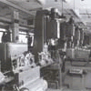
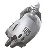
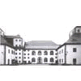
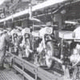

1956 |
Gama de productie se extinde, se nasc modele ca ES 250 si ES 175, iar modelul RT 125/2 se imbunatateste. Se infiinteaza si o echipa destinata curselor, care in primul an de la infiintare a castigat 9 curse. |
||
1957 |
Fabrica se afla intr-o continua extindere si masoara 65 000 mp. |
 | |
1958 |
Pe plan sportiv echipa infiintata s-a instalat pe primul loc in lume la categoriile 125 cmc si 250 cmc. |
 | |
1959 |
S-au imbunatatit unele modele si a aparut MZ 125/3 si MZ 150/4. |
||
1960 |
Sectia din fabrica destinata sportului se muta la Hohndorf. |
||
1961 |
Incepand din anul acesta, dezvoltarea motorului in doi timpi s-a expus la muzeu. |
 | |
1962 |
Productia modelului RT 125 si MZ 125/3 se termina si se produce modelul 125 respectiv 150. |
 | |
1963 |
Utilajele din fabrica sunt din nou modernizate, de exemplu se monteaza o banda rulanta cu sistem electrostatic de vopsire. Se prezinta un model cu Wankelmotor. Se ajunge si la fabricarea exemplarului cu numarul 500 000. Echipa de sport a fabricii castiga la concursul de sase zile. |
||
1965 |
Anul in care MZ ajunge la o productie anuala de 63 700 de motociclete. Intre anii 1961 si 1971 sunt exportate 257 000 de motociclete in 65 de tari ale lumii. |
||
1966 |
Seria de victorii la concursul de sase zile continua an dupa an, MZ este pe primul loc timp de 4 ani. |
||
1967 |
Anul in care compania sarbatoreste 60 de ani de existenta. |
||
1968 |
In RFG motocicleta este distribuita prin firma Neckermann. |
||
1970 |
Numar magic: cu modelul MZ ETZ 250 Trophy Sport s-au produs 1 000 000 de motociclete din anul 1950. |
||